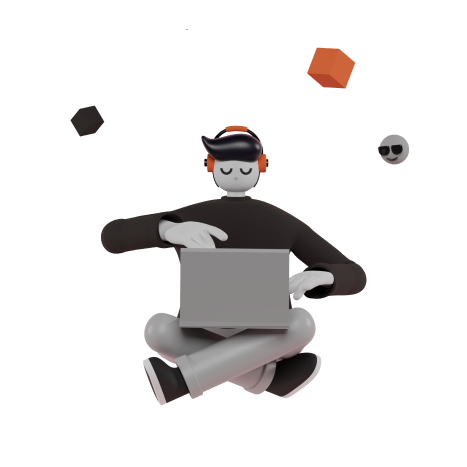

Halo! Saya Gunawan. Seorang Designer dan Developer
Passionate di bidang Frontend Dev dan UI/UX Design. Suka membangun antarmuka website yang fast-performace dan well-design menggunakan teknologi-teknologi terbaru.

Passionate di bidang Frontend Dev dan UI/UX Design. Suka membangun antarmuka website yang fast-performace dan well-design menggunakan teknologi-teknologi terbaru.